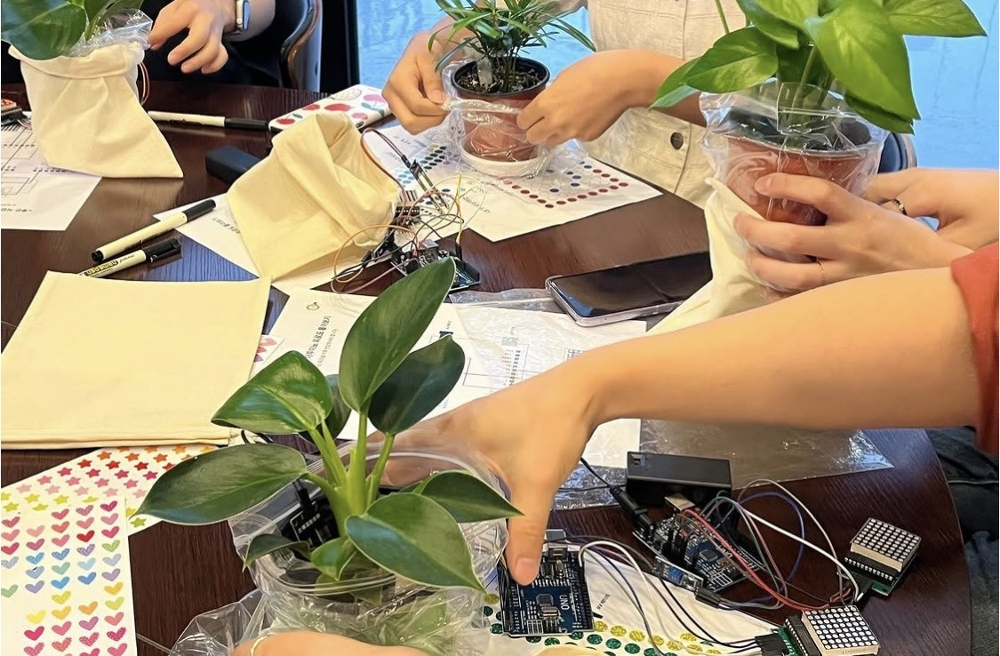
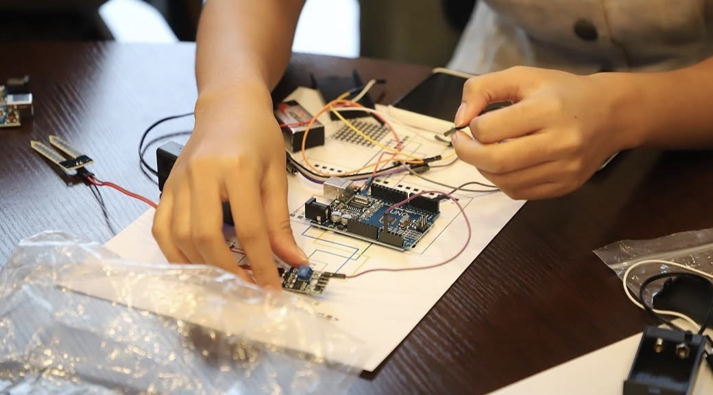
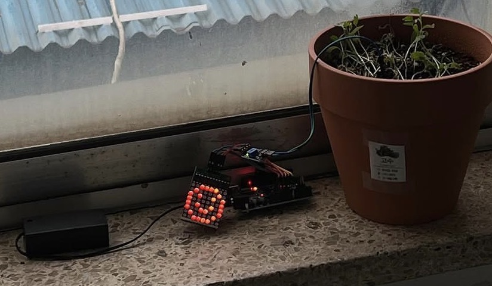
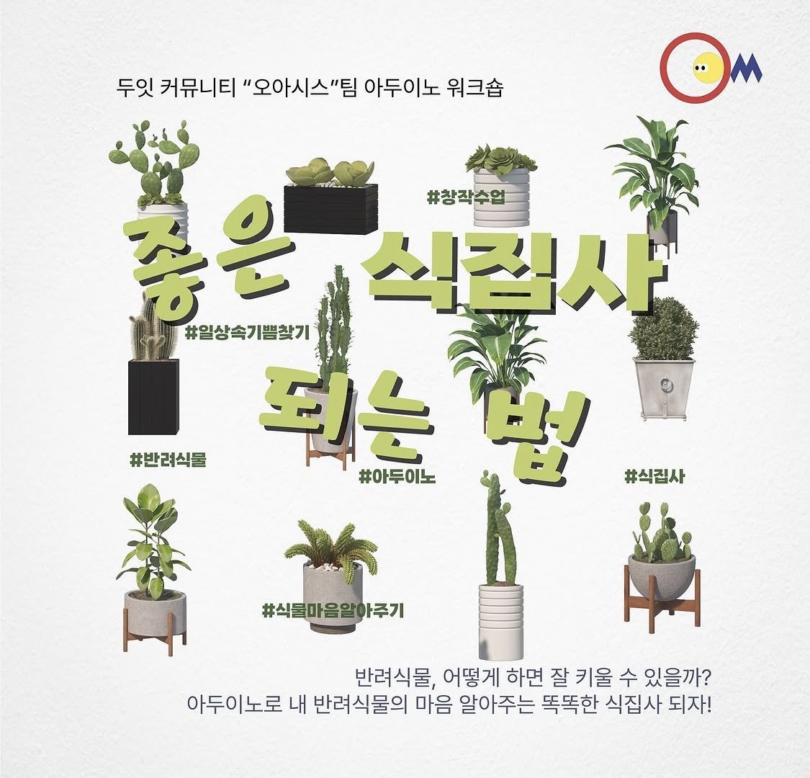
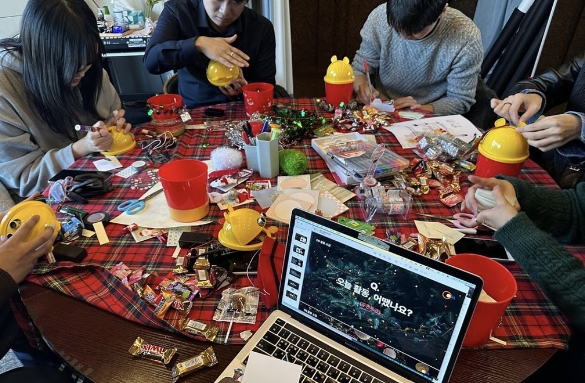

식집사 모임Plant Parents Club
금천구 청년 공간 '청춘삘딩'에서 1인 가구 청년들의 고립감을 해소하기 위해 기획한 인터랙티브 아트 워크숍입니다. 식물이 자신의 감정을 표현한다면 어떨까라는 질문에서 출발해, 습도에 따라 우는 얼굴과 웃는 얼굴을 LED로 보여주는 아두이노 화분을 함께 만들었습니다. An interactive art workshop I designed at Cheongchun Building, a youth space in Geumcheon-gu, to ease the isolation felt by young people living alone. Starting from the question, "what if a plant could express its own feelings?", participants built Arduino planters that showed a crying or smiling face on an LED depending on soil moisture.
배경Background


혼자 사는 청년들에게, 함께 만들 이유를 주다.
Giving young people living alone a reason to make something together.
청춘삘딩은 금천구에 있는 국내 최초의 기초지자체 청년활동공간이다. 금천구 청년 공간 '청춘삘딩'에서 1인 가구 청년들의 고립감을 해소하기 위해, 트렌디한 컨셉의 인터랙티브 아트 워크숍을 총괄 기획하고 진행하는 역할을 맡았습니다.
Cheongchun Building, in Geumcheon-gu, is Korea's first youth activity space built by a local district government. At Cheongchun Building, a youth space in Geumcheon-gu, I took on the role of planning and running an interactive art workshop with a trendy concept to ease the isolation felt by young people living alone.
당시 지역 내 1인 가구 청년들이 겪는 정서적 고립감을 해소하고 커뮤니티를 활성화해야 한다는 미션이 있었습니다. 단순히 기술을 가르치는 것이 아니라, 기술을 매개로 서로 소통할 수 있는 콘텐츠가 필요하다고 판단했습니다.
At the time, there was a clear mission to relieve the emotional isolation of young people living alone in the area and to activate the local community. I judged that what they needed wasn't simply a technical lesson, but content that could help them communicate with each other through technology.

컨셉Concept
식물이 감정을 표현한다면 어떨까.
What if a plant could express its own feelings?
2030 세대의 '식집사(식물 키우기)' 트렌드를 포착해, '식물이 자신의 감정을 표현한다면?'이라는 인터랙티브 컨셉을 도출했습니다. 습도가 부족하면 우는 얼굴이, 적당하면 웃는 얼굴이 LED로 표현되는 아두이노 화분을 함께 만들었습니다.
I picked up on the "plant parent" trend among people in their 20s and 30s and developed an interactive concept around one question. What if a plant could express its own feelings? Participants built Arduino planters that showed a crying face on an LED when the soil was too dry, and a smiling face when it was just right.
결과Result
인스타그램과 구글폼을 활용한 사전 조사로 수요를 파악했고, 목표 대비 2배의 신청률을 기록했습니다. 이 덕분에 추가 예산안을 편성받아, 2차 워크숍은 당시 한국에서 유행하던 '어드벤트 캘린더' 컨셉을 도입해 유치에 성공했습니다. 그 결과, 1차 워크숍 참여자의 57%가 다음 워크숍에 재방문하는 성과를 거두었으며, 청년들이 기술을 매개로 자연스럽게 대화하고 관계를 맺는 커뮤니티의 장을 형성했습니다.
Pre-research through Instagram and a Google Form confirmed demand, and the first workshop drew 2x the target number of sign-ups. Thanks to this, I secured additional budget, and the second workshop adopted the "advent calendar" concept, which was trending in Korea at the time, again succeeding in attracting participants. As a result, 57% of participants from the first workshop returned for the next one, and the workshop became a space where young people naturally talked with each other and formed relationships through technology.

